tabs选项卡tabs选项卡 包含多个选项卡tabtabtab选项卡 还可以对应多个windowwindow 对比不同tab - :tabnewtab - gt、gTtab - 1gt 2gt 3gttab - :tabctab - :tabsbuffer缓存 之外buffer缓存 内部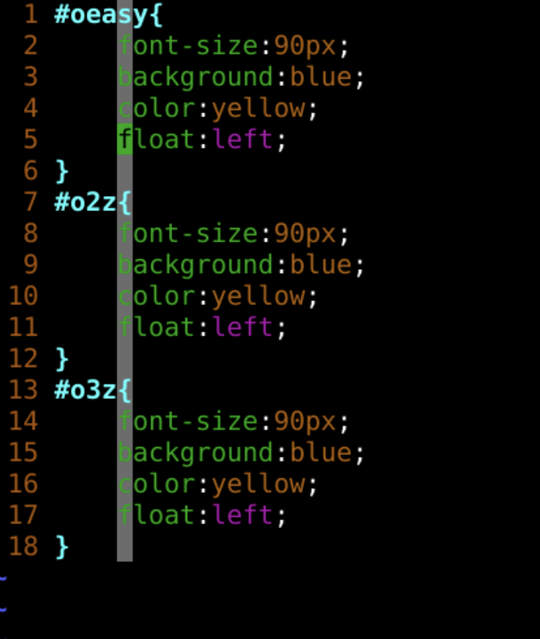
css 文件http://github.com/overmind1980/oeasyvim.git里面 oeasy.css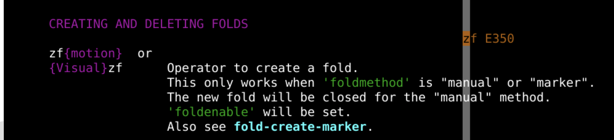
-zf6G
- 报错了
:h E350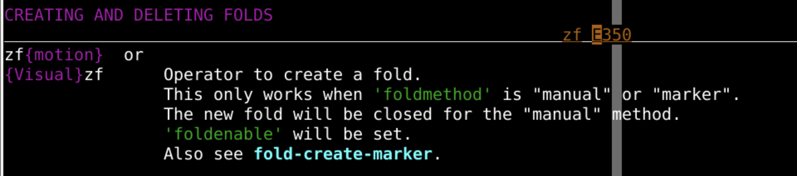
:set foldmethod?:h foldmethod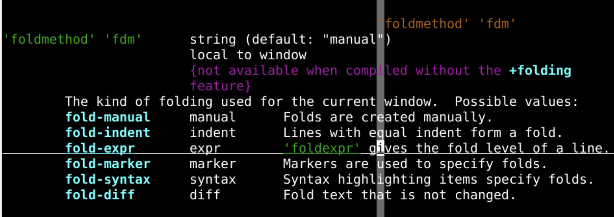
:set foldmethod=manualfolding折叠都和字母z相关z 就像一摞纸张打包之后的样子zf 就是打包 foldzf 后面可以加 motionzf4G 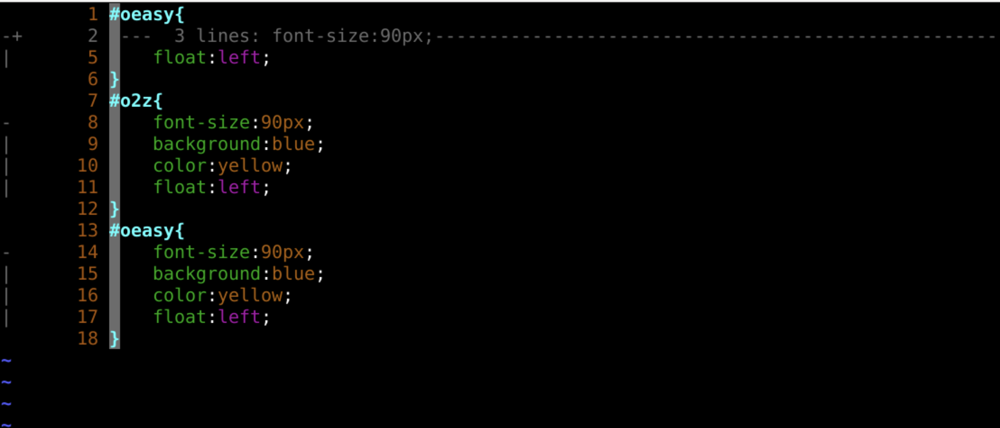
zo 可以打开折叠z 是折叠o 是 open打开zc 可以关闭
z 是折叠c 是 close关闭这两个是折叠最常用的命令
foldcolumn:set foldcolumn=4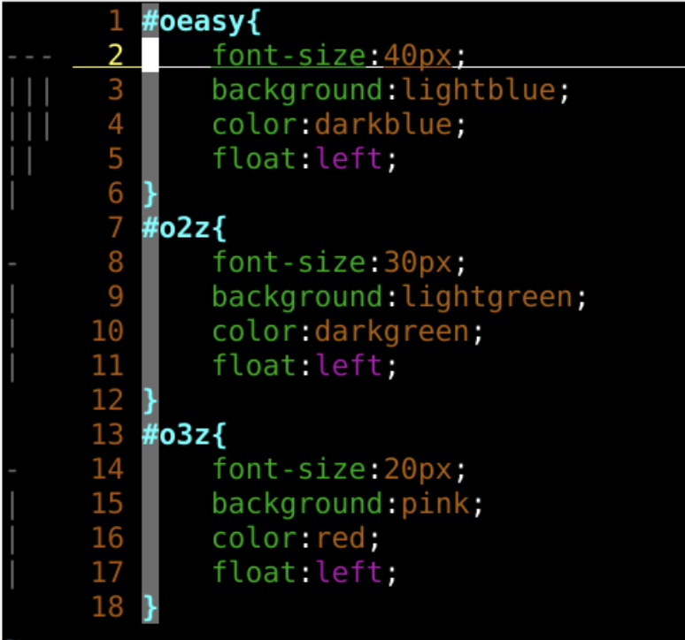
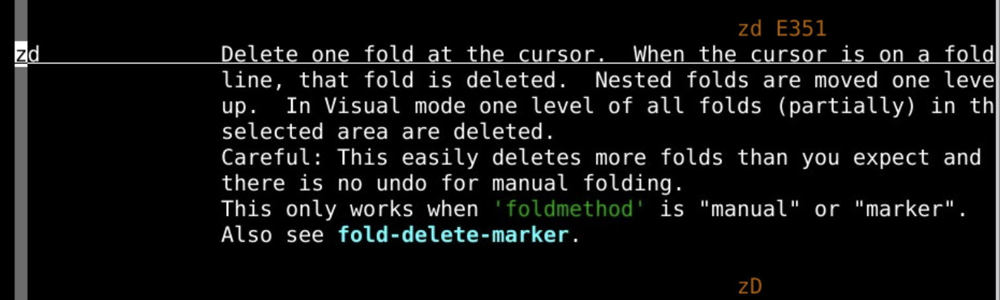
zdz 是折叠d 是删除foldcolumn是+的地方zD 是递归地删除折叠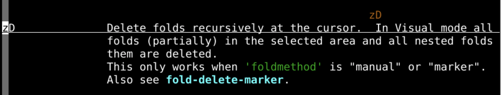
zf2j 创建一些折叠zf是创建折叠zf2j中的2j是motionzfa{创建当前标记的折叠zfi{创建折叠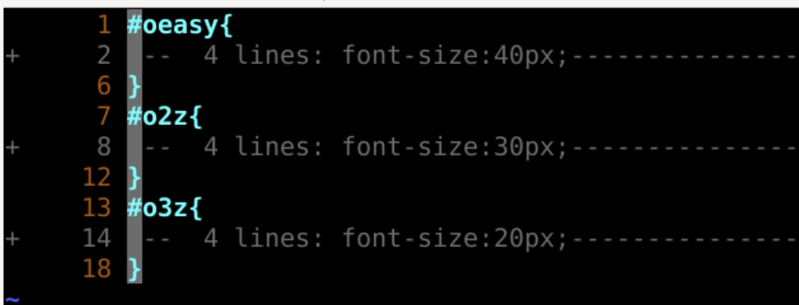
foldlevel:set foldlevel=0:set foldlevel=1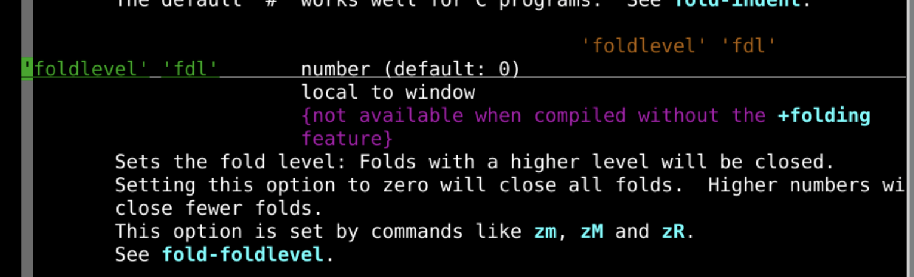
:set foldmethod?:set foldmethod=indent~/.vimrc这样每次都是缩进折叠了:set foldcolumn=4:set foldlevel=0:set foldlevel=1gg=G可以帮助你控制缩进foldlevel - 显示折叠层次foldcolumn - 折叠树宽度foldmethod - 折叠方式manual - 手动indent - 缩进zf2jzfa{zfi{zdzo openzc close:set foldlevel=1 设置折叠层次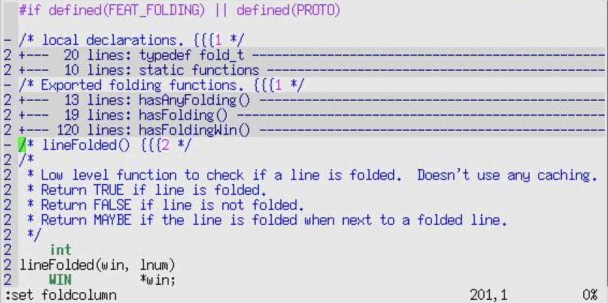